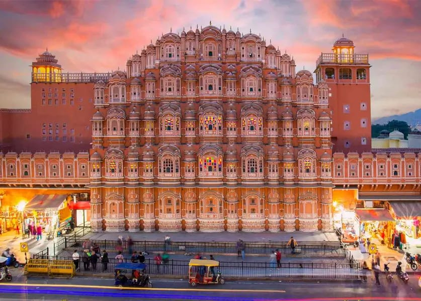
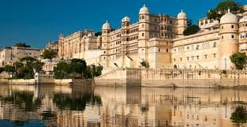
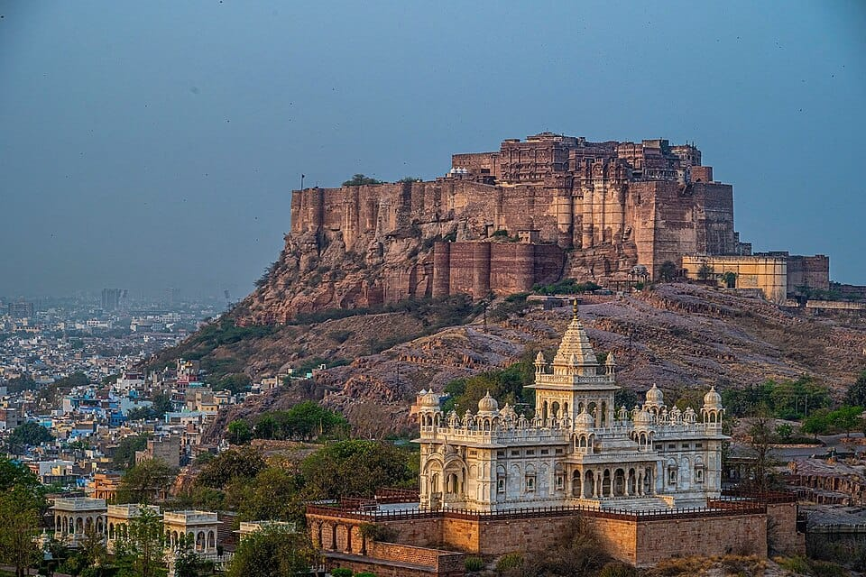

Rajasthan is a popular tourist destination in India known for its forts, palaces, and vibrant culture.
Some of the most well-known places to visit include Jaipur, Udaipur, Jodhpur, Jaisalmer, and Ranthambore.
Major Cities and Attractions:
Jaipur (The Pink City):
The capital of Rajasthan, known for its forts like Amer Fort and Hawa Mahal, as well as the City Palace and Jantar Mantar.

Udaipur (The City of Lakes):
Famous for its beautiful lakes, including Lake Pichola and Fateh Sagar Lake, and the City Palace complex.

Jodhpur (The Blue City):
Home to the impressive Mehrangarh Fort, Umaid Bhawan Palace, and Jaswant Thada.

Jaisalmer (The Golden City):
Known for its Jaisalmer Fort, havelis (mansions), and Thar Desert experiences like camel safaris.